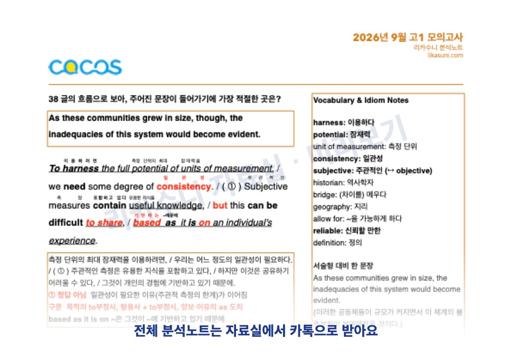

안녕하세요, 이매동 코코스학원 리카수니 원장입니다.
학생 요청으로 2026년 9월 고1 영어 모의고사 38번 분석노트를 만들었어요.
시험지를 옆에 펴 놓고 보시면 더 잘 보여요.
· 시험: 2026년 9월 고1 전국연합학력평가 영어
· 번호: 38번 (주어진 문장의 위치)
· 정답: ⑤
측정에는 일관된 정의가 필요하다는 글이에요.
초기 사회에서는 '한 단위 = 어떤 신체 부위' 정도의 단순한 정의로 충분했지만, 공동체가 커지고 무역·조공을 둘러싼 갈등이 생기면서 그런 체계로는 부족해졌다는 흐름이에요.
As these communities grew in size, though, the inadequacies of this system would become evident.
(하지만 이러한 공동체들이 규모가 커지면서, 이 체계의 불충분함이 분명해졌을 것이다.)
· these communities → ④의 '가장 초기의 사회·하나의 정착지'를 가리켜요.
· this system → ④의 '한 단위가 특정 신체 부위와 같다'는 단순한 정의 체계예요.
· though → ④까지의 '단순해도 됐다'에서 ⑤ 뒤 '갈등 → 더 큰 일관성 요구'로 흐름을 바꿔요.
→ 주어진 문장은 ④ 문장 뒤, ⑤ 자리에 들어가요.
· ① → 앞 문장(일관성이 필요하다)에 이어 주관적 측정의 한계가 바로 나와 흐름이 끊기지 않아요.
· ②·③ → '측정 = 거리의 기술', '측정도 언어처럼 신뢰할 만한 정의가 필요' 로 자연스럽게 이어져요.
· ④ → 아직 these communities 가 가리킬 '초기 사회'가 나오기 전이에요.
문장 삽입은 these·this 같은 지시어가 가리킬 말이 바로 앞에 있는지 확인하는 게 핵심이에요.

1) 목적의 to부정사
→ To harness the full potential of units of measurement, we need ~
2) 양보·이유의 as 도치 / 분사구문 based on
→ based as it is on an individual's experience (= because it is based on ~)
3) no more A than B (B보다 더 A하지 않다 = B만큼만)
→ no more widely than a single settlement / no more complex than knowing ~
4) 접속사 as (~하면서) / 문중 부사 though
→ As these communities grew in size, though, ~
· harness 이용하다
· potential 잠재력
· unit of measurement 측정 단위
· consistency 일관성
· subjective 주관적인 (↔ objective)
· bridge (차이를) 메우다
· allow for ~을 가능하게 하다
· reliable 신뢰할 만한
· definition 정의
· settlement 정착지
· inadequacy 불충분함
· evident 분명한
· tribute 조공
· demand 요구하다
분석노트에 '서술형 대비 한 문장'(주어진 문장)과 as 도치 구문(Rich as they are, ~ = Though they are rich, ~) 정리, 영어 핵심 요약(Core Summary)을 해석과 함께 넣어 두었어요.
자료실 회차 페이지에서 카카오 로그인 후 번호를 고르면 카톡으로 PDF 를 받을 수 있어요.
같은 회차 다른 번호도 요청할 수 있어요.
▶ 2026년 9월 고1 영어 자료 보기
https://data.likasuni.com/moe/go1/2026-09/eng/
분당 이매동 코코스학원은 초등·중등·고등 영어와 수학을 가르쳐요.
모의고사·수능특강·내신 대비가 궁금하시면 편하게 문의해 주세요.
· 홈페이지: https://www.cocosedu.co.kr/
· 주소: 경기 성남시 분당구 판교로 476 2층